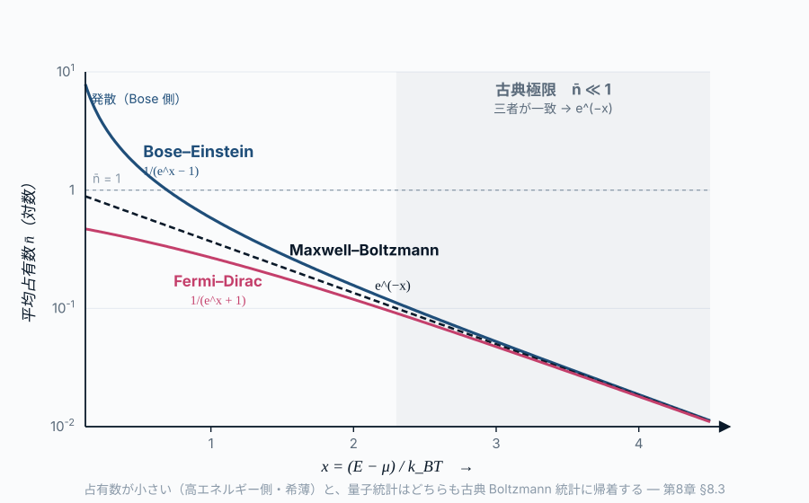

第8章 光子の統計
この章の主題：第7章で立ち上げた古典統計（Boltzmann 分布）は、放射場に適用すると Rayleigh–Jeans 則の発散という決定的な破綻を起こした。本章では、光子を「区別できない Bose 粒子」として扱い、Bose–Einstein 統計を立ち上げる。これによりプランク分布の占有因子 1/(e^{h\nu/kT}-1) が必然として現れる。本章は第III部のクライマックスであり、中心地図のもっとも特徴的な構造を解き明かす。
この章の中心地図
中心地図：プランク関数 ― 本部で扱う因子
B_\nu(T) = \frac{2 h \nu^3}{c^2} \cdot \boxed{\frac{1}{e^{h\nu/kT} - 1}}
強調されている 占有因子 1/(e^{h\nu/kT}-1) が、第III部で逆引きする対象である。これは熱平衡にある光子（Bose 粒子）の統計から立ち上がる量で、低振動数極限では kT/(h\nu) に、高振動数極限では e^{-h\nu/kT} に漸近する。第8章で本格的に導出する。
方針：本章でターゲットとするのは中心地図プランク関数 B_\nu(T) = (2h\nu^3/c^2) \cdot \boxed{1/(e^{h\nu/kT}-1)} の第二因子（占有因子）である。前因子 2h\nu^3/c^2 は第V部のモード密度で扱う。
この章で答える問い
- なぜ光子の集団は古典粒子の統計（Maxwell–Boltzmann）ではなく、Bose–Einstein 統計に従うのか
- なぜ光子の化学ポテンシャルはゼロでなければならないのか
- 占有因子 1/(e^{h\nu/kT}-1) は、観測スペクトルのどの特徴に対応しているのか
- 光子気体の統計を仮定すると、なぜプランク分布が出てくるのか
到達目標
この章を読み終えると、読者は次のことができるようになる：
- Bose–Einstein 分布を、識別不能粒子の統計力学から導ける
- 光子の化学ポテンシャルがゼロである理由を、粒子数非保存の観点から説明できる
- プランク分布の指数関数因子 1/(e^{h\nu/kT}-1) が、光子統計の帰結であることを論じられる
8.1 区別できない粒子 ― 古典統計はなぜ破綻するか
[本文目安：B3-B4]
第7章で扱った古典統計は、粒子を識別できる前提に立っていた。N 個の粒子に「1番、2番、…、N 番」とラベルをつけ、それぞれが状態 i_1, i_2, \ldots にあるとき、ミクロ状態の数を数えた。
しかし、ミクロ世界の同種粒子は区別できない。電子1個と電子2個を入れ替えても、物理的に区別できる状況にはならない。これは古典物理の枠組みを超える性質で、量子力学（第IV部）から要請される事実である。
区別できない粒子の場合、ミクロ状態の数え方が変わる。状態 i にある粒子数 n_i の組 \{n_i\} だけがミクロ状態を特徴づける。どの個別粒子がどこにいるかは問題にならない。
具体例で比較する。状態が二つ（A, B）、粒子が二つの場合：
| 識別可能（古典） | 識別不能（量子） |
|---|---|
| 1 が A、2 が A: 1 通り | (2, 0): 1 通り |
| 1 が A、2 が B: 1 通り | (1, 1): 1 通り |
| 1 が B、2 が A: 1 通り | (0, 2): 1 通り |
| 1 が B、2 が B: 1 通り | |
| 合計: 4 状態 | 合計: 3 状態 |
ここから「1 が A、2 が B」と「1 が B、2 が A」が同じ状態に潰れることに注目したい。この潰れが Boltzmann 分布から Bose 統計への移行を生む。
用語：区別できない粒子の統計は、整数スピン粒子なら Bose–Einstein 統計、半整数スピン粒子なら Fermi–Dirac 統計になる。光子はスピン1の Bose 粒子なので、Bose 統計に従う。詳しくは第IV部で扱う。
8.2 Bose 粒子と Fermi 粒子 ― 二種類の量子統計
[本文目安：B3-B4]
区別できない粒子は、状態を共有できるかどうかでさらに二つに分かれる：
- Bose 粒子（boson, ボソン）：同じ状態に何個でも入れる。光子・グルーオン・W^\pm・Z^0・Higgs・^4He など。スピンが整数。
- Fermi 粒子（fermion, フェルミオン）：同じ状態には1個しか入れない（Pauli の排他原理, Pauli exclusion principle）。電子・陽子・中性子・クォーク・^3He など。スピンが半整数。
この区別は粒子の本質的な性質（スピン統計の定理）に基づくが、本書では結果だけを使う。証明は第IV部・第VIII部の場の量子論で扱われる。
光子は Bose 粒子なので、本章では Bose 統計（Bose–Einstein 分布）を扱う。
8.3 Bose–Einstein 分布 ― 占有数の最確値
[本文目安：B4｜導出：M1]
Bose 粒子の集団に最大エントロピー原理（第6章 §6.4）を適用する。
各「単一粒子状態」i に何個の粒子が入るかを n_i とする。n_i は 0, 1, 2, … と自由。状態 i の縮退度（同じエネルギー E_i の状態数）を g_i、その状態を占有する粒子の総数を N_i とすると、これらの占有を実現する場合の数（ミクロ状態数）は、
W_\text{BE} = \prod_i \frac{(N_i + g_i - 1)!}{N_i!\,(g_i - 1)!} \tag{11.1}
これは「g_i 個の箱に N_i 個の区別できない玉を入れる組合せ」である。
エントロピー S = k_B \ln W を、制約 \sum N_i = N, \sum N_i E_i = E のもとで最大化する。Lagrange 未定乗数法（第6章 §6.4 の手順）と Stirling 近似で、結果は
\bar{n}_i = \frac{1}{e^{(E_i - \mu)/k_B T} - 1} \tag{11.2}
これが Bose–Einstein 分布（Bose–Einstein distribution）である。\bar{n}_i は状態 i あたりの平均占有数（occupation number）。

導出ノート（オンライン版限定）
式 11.1 の対数をとり、Stirling 近似 \ln N! \simeq N \ln N - N を使うと
\ln W = \sum_i \left[ (N_i + g_i) \ln(N_i + g_i) - N_i \ln N_i - g_i \ln g_i \right]
これに Lagrange 乗数 \alpha（粒子数保存）、\beta（エネルギー保存）を加えて
\frac{\partial}{\partial N_i}\left[ \ln W - \alpha (\sum_j N_j - N) - \beta (\sum_j N_j E_j - E) \right] = 0
から \ln(N_i + g_i) - \ln N_i = \alpha + \beta E_i、すなわち \bar{n}_i = N_i/g_i = 1/(e^{\alpha + \beta E_i} - 1) を得る。\beta = 1/k_B T、\alpha = -\mu/k_B T で 式 11.2 に至る。
式 11.2 はプランク分布の占有因子の形と一致する ― ただし化学ポテンシャル \mu がついている。光子の場合は次節で \mu = 0 となる。
問い：Bose 分布の分母にある「-1」は、Fermi 分布の「+1」と何が違うのか？
短答：粒子の数え方の違いから来る。Bose では「同じ状態に複数入れる」ため Σ_n = 1/(1−x)（無限等比和）の因子から -1、Fermi では「0 か 1 だけ」だから 1+x から +1 になる。
もう一歩：分母の符号は、低温（E - \mu \ll k_B T）で巨大な違いを生む。Bose では \bar{n} \to \infty（Bose–Einstein 凝縮の可能性）、Fermi では \bar{n} \to 1（縮退、白色矮星・中性子星）。本書では光子のみ扱うが、第18章の中性子星表面で Fermi 縮退に再会する。
逆の極限 ― 量子統計はいつ古典統計に戻るか：上は占有数が大きい極限だった。逆に 占有数が小さい（\bar{n} \ll 1）極限を見ると、量子統計と古典統計の関係が見える。\bar{n} \ll 1 は e^{(E-\mu)/k_B T} \gg 1 と同じで、このとき分母の \mp 1 は無視でき、
\bar{n}_i = \frac{1}{e^{(E_i-\mu)/k_B T} \mp 1} \;\longrightarrow\; e^{-(E_i-\mu)/k_B T}
と Bose も Fermi も等しく Maxwell–Boltzmann 分布（第7章 式 10.6）に帰着する。物理的には、各状態の占有がまれ（\bar n\ll1）なら「同じ状態に複数入るか」「入れないか」という量子的な違いが効かず、粒子はあたかも区別できる古典粒子のように振る舞う。この条件は、数密度 n と熱的ド・ブロイ波長 \lambda_\text{th}=h/\sqrt{2\pi m k_B T} で n\lambda_\text{th}^3 \ll 1（非縮退）と書ける ― 密度が低く温度が高いほど古典近似がよい。
本書が物質の準位を Boltzmann 分布（第7章）で、放射場を Bose 分布（本章）で扱うのは矛盾ではなく、同じ統計の二つの極限である。ただし光子は \bar n が小さいとは限らず（低振動数側で \bar n\gg1）、\mu=0 も効くため、プランク分布は古典分布には縮退しない ― そこが熱放射の量子性の核心である。
使えるようになった道具（§8.3）：Bose–Einstein 占有数 式 11.2 を、温度と化学ポテンシャルから具体的に書き下せる。これが観測されるプランク分布の指数関数因子の正体を与える。
8.4 光子の化学ポテンシャル ― なぜゼロか
[本文目安：B4｜導出：M1]
光子は 式 11.2 で \mu = 0 が成り立つ。これがプランク分布のあの単純な形
\bar{n}_\text{photon}(\nu, T) = \frac{1}{e^{h\nu/k_B T} - 1} \tag{11.3}
を生む。なぜ \mu = 0 になるのか。
化学ポテンシャル \mu は、粒子を一個加えたときの自由エネルギーの変化 \partial F / \partial N である（第7章 §7.5）。これは粒子数 N が保存量である場合にのみ意味を持つ。粒子数が保存しない系では、N は熱平衡で「他の量と整合するように決まる」量となり、\mu は粒子追加の代償なし ― すなわち \mu = 0 ― になる。
光子の場合：
- 電磁場と物質の相互作用（吸収・放出）で光子は生成・消滅する
- 光子の総数 N_\gamma は熱平衡で自動的に決まる量
- よって \mu_\gamma = 0
これに対して、原子・分子・電子のような物質粒子は通常の温度・密度では数が保存し（化学反応がないかぎり）、\mu \ne 0 となる。
観測との対応：CMB のスペクトルが完璧な黒体（\mu = 0）であることは、再結合以前に光子と物質が十分に長く相互作用して光子数を「自由に」調整できたことの証拠。もし \mu \ne 0 なら、CMB スペクトルは Bose–Einstein 分布の形（プランクから外れる）を残すはずで、これを 「\mu 歪み」 と呼ぶ。第16章で扱う。
問い：光子の数が保存しないなら、宇宙の光子数はどこから決まっているのか？
短答：「光子数 N_\gamma は熱平衡で自動的に決まる」とは、温度 T と空洞の体積 V が決まれば、N_\gamma(T, V) が一意になることを意味する。具体的には N_\gamma \propto V T^3。
もう一歩：観測される CMB の光子数密度 n_\gamma \simeq 411 cm^{-3} は、CMB 温度 T = 2.725 K と n_\gamma \propto T^3 から一意に決まる。早期宇宙の物質との結合は、この光子数を「自由に」作り出してくれた。
使えるようになった道具（§8.4）：化学ポテンシャルがゼロな系（光子）の占有数 式 11.3 は、温度と振動数だけで書き下せる。これが観測される CMB の黒体スペクトルの指数関数因子の正体である。CMB が完全な黒体に近い (\mu \lesssim 10^{-5}) ことは、\mu = 0 の前提（光子数の非保存）が宇宙史で確かに実現したことの観測的証拠になる（第16章 \mu 歪み）。
8.5 光子気体の統計 ― エネルギー密度から圧力まで
[本文目安：B4｜導出：M1]
式 11.3 を使って、放射場の各種熱力学量を計算できる。
エネルギー密度（振動数あたり）：振動数 \nu 近傍のモード密度を g(\nu) d\nu、各モードのエネルギーを h\nu、平均光子数を \bar{n} とすると
u_\nu d\nu = g(\nu)\, h\nu\, \bar{n}(\nu, T)\, d\nu = g(\nu) \cdot \frac{h\nu}{e^{h\nu/k_B T} - 1}\, d\nu \tag{11.4}
方針（先取りの注意）：以下の計算でモード密度 g(\nu) = 8\pi\nu^2/c^3 を先取りして借用する。これは電磁場が三次元空間で離散的な定在波モードを持つことから出る量で、その本格的な導出は第V部・第14章で行う。ここでは結果だけを仮に借りる位置づけであり、第14章でこの借用を返す（8.5 光子気体の統計 ― エネルギー密度から圧力まで ↔︎ 第14章の往復で確認できる）。
本章の中心課題は 占有因子 1/(e^{h\nu/kT}-1) の導出（前節 式 11.3）である。ただしこれを放射場のエネルギー密度として観測できる量にするには、モード密度が必要である。その導出は第V部・第14章で行う。占有因子だけでは観測量にならず、「占有因子＋モード密度」の組合せで初めて Planck 分布全体が見える。全体形が見えてから、第V部でモード密度の起源に逆引きする、というのが本書の戦略である。
第V部から g(\nu) = 8\pi\nu^2/c^3 を借りて代入すれば
u_\nu(T) = \frac{8\pi \nu^2}{c^3} \cdot \frac{h\nu}{e^{h\nu/k_B T} - 1} = \frac{8\pi h \nu^3}{c^3} \cdot \frac{1}{e^{h\nu/k_B T} - 1} \tag{11.5}
そして比強度 B_\nu = c u_\nu / (4\pi) から
B_\nu(T) = \frac{2 h \nu^3}{c^2} \cdot \frac{1}{e^{h\nu/k_B T} - 1} \tag{11.6}
プランク分布の全体形が、光子気体の Bose–Einstein 統計と（第V部から借りた）モード密度から再構成された。本章で逆引きしたのは右側の 占有因子であり、前因子 2h\nu^3/c^2 の起源は第V部で引き続き扱う。
全エネルギー密度：式 11.5 を全振動数で積分（x = h\nu/k_B T の置換と \int_0^\infty x^3/(e^x - 1) dx = \pi^4/15）すると
u(T) = \int_0^\infty u_\nu d\nu = \frac{4\sigma}{c} T^4 \equiv a T^4 \tag{11.7}
ここで \sigma は Stefan–Boltzmann 定数。T^4 の起源は、占有因子の積分結果として現れる。
圧力：光子気体の圧力は、第7章 §7.5 の熱力学関数の方法で
P = \frac{1}{3} u = \frac{a T^4}{3} \tag{11.8}
「P = u/3」の係数は、光子が質量ゼロ・等方分布の Bose 気体である帰結。気体の状態方程式（理想気体 PV = N k_B T）とは異なる。
観測との対応：恒星内部や降着円盤の中心部では、放射圧 P_\text{rad} = aT^4/3 がガス圧 P_\text{gas} = n k_B T より大きくなることがある。Eddington 限界はこの放射圧と重力のバランスから決まる量で、星の質量上限を与える。第18章で扱う。
8.6 統計力学から見たプランク分布 ― 第III部の到達点
[本文目安：B4｜導出：M1]
第I部で「観測される連続スペクトルは黒体に近い」と確認し、第II部で「LTE ではソース関数がプランク関数」と整理し、第III部の本章で 「Bose–Einstein 統計から プランク分布の占有因子 1/(e^{h\nu/kT}-1) が必然として出る」 ことを示した。
これは中心地図プランク関数
B_\nu(T) = \boxed{\frac{2 h \nu^3}{c^2}} \cdot \boxed{\frac{1}{e^{h\nu/k_B T} - 1}}
の 指数関数因子（右側、本章で解き明かした）が、統計力学（光子の Bose 統計＋熱平衡）の帰結であることを意味する。
残りは：
- 前因子 2h\nu^3/c^2 ：モード密度 \propto \nu^2、エネルギー量子 h\nu、偏光自由度 2 の積。第V部（電磁気学）と第IV部（量子論）の合作で解き明かす
- h\nu 自体の意味：エネルギーが連続でなく h\nu の単位で離散化されること。第IV部（量子論）の中心テーマ
第IV部・第V部でこれらの「なぜ」が解明されれば、中心地図プランク関数のすべての因子が逆引きで説明されたことになる。これが本書の第I〜V部全体の流れである。
この章で何がわかったか
中心地図に戻る
本章で、中心地図 B_\nu(T) の 指数関数因子 1/(e^{h\nu/kT}-1) が解き明かされた：
- Bose 統計（光子が区別できないボソンであること）から 1/(e^{(E-\mu)/k_B T} - 1) という形が出る
- 光子の化学ポテンシャル \mu = 0（光子数が保存しないこと）が分母を簡単にする
- 結果として 占有因子 1/(e^{h\nu/k_B T} - 1) が現れ、これが指数関数的減衰（高振動数）と \nu^2 立ち上がり（低振動数）の両方を統一的に与える
第I〜III部のロードマップが完結した： 観測される連続スペクトル → 熱平衡という条件 → 光子の Bose 統計 → 占有因子
次章へ：第9〜12章では「指数の中の h\nu」を逆引きする。なぜエネルギーが連続でなく h\nu の量子化された単位で扱われるのか。これが量子論の起源と直結する。
演習問題
[導出補完] 解答例 は章末「解答例」にまとめてある（オンライン版では各問のボタンから開く）。まず自力で解いてから開くこと。
問題 8-1 識別可能 vs 不能 ― 数え上げの違い
[★ 難易度：☆☆ ] [導出補完]
§8.1 は2状態2粒子で古典4通り・Bose 3通りになることを示した。一般化する。
- g 個の状態に N 個の区別できない Bose 粒子を入れる場合の数が \binom{N+g-1}{N} になることを「仕切り棒（玉と仕切り）」の論法で示せ。
- g=2,N=2 で値が 3 になることを確かめ、古典の g^N=4 と比べよ。
- 「1 が A・2 が B」と「1 が B・2 が A」が同一状態に潰れることが、なぜ Boltzmann 統計から Bose 統計へのずれを生むのか述べよ。
関連：§8.1 区別できない粒子、§8.2 Bose と Fermi／識別不能性の量子論的根拠は第12章。
問題 8-2 Bose–Einstein 分布の導出
[★ 難易度：☆☆☆ ] [導出補完]
§8.3 は導出をオンライン版の畳んだノートに収めた。これを自力で展開する。状態群 i（縮退度 g_i、占有 N_i）のミクロ状態数 W=\displaystyle\prod_i\frac{(N_i+g_i-1)!}{N_i!\,(g_i-1)!}。
- \ln W に Stirling 近似を適用し（g_i\gg1 とみて g_i-1\approx g_i）、\ln W\simeq\sum_i[(N_i+g_i)\ln(N_i+g_i)-N_i\ln N_i-g_i\ln g_i] を示せ。
- 制約 \sum N_i=N、\sum N_iE_i=E のもとで Lagrange 乗数 \alpha,\beta を用い、\partial/\partial N_i=0 から \ln\dfrac{N_i+g_i}{N_i}=\alpha+\beta E_i を導け。
- 占有数 \bar n_i=N_i/g_i について解き、\bar n_i=\dfrac{1}{e^{\alpha+\beta E_i}-1}=\dfrac{1}{e^{(E_i-\mu)/k_BT}-1} を示せ（\beta=1/k_BT、\alpha=-\mu/k_BT）。
関連：§8.3 Bose–Einstein 分布／Lagrange 法の枠組みは§6.4（演習 6-3）、\mu=0 は演習 8-3。
問題 8-3 光子の μ=0 と CMB 光子数密度（T³ 則）
[★ 難易度：☆☆☆ ] [理解を深める]
§8.4 は光子の化学ポテンシャルが \mu=0 で \bar n=1/(e^{h\nu/kT}-1) になり、n_\gamma\propto T^3 と述べた。確かめる。
- なぜ光子は \mu=0 なのか、粒子数の保存／非保存の観点から述べよ。
- 光子数密度 n_\gamma=\displaystyle\int_0^\infty g(\nu)\bar n(\nu)\,d\nu（g(\nu)=8\pi\nu^2/c^3）で x=h\nu/k_BT と置換し、n_\gamma=\dfrac{8\pi}{c^3}\left(\dfrac{k_BT}{h}\right)^3\displaystyle\int_0^\infty\frac{x^2}{e^x-1}dx を導け。
- \displaystyle\int_0^\infty\frac{x^2}{e^x-1}dx=2\zeta(3)\approx2.404 を用い、T_\mathrm{CMB}=2.725 K で n_\gamma を計算して \approx411 cm^{-3} を確認せよ。
関連：§8.4 光子の化学ポテンシャル／\mu 歪みと CMB は第16章、モード密度 g(\nu) の導出は第14章、\int x^3 版（エネルギー密度）は演習 10-3。
問題 8-4 光子気体の P=u/3 と放射圧 vs ガス圧
[★ 難易度：☆☆ ] [理解を深める]
§8.5 は光子気体の圧力 P=u/3=aT^4/3 を与えた。理想気体と比べ、放射圧が効く条件を探る。
- 等方放射場では P_\nu=u_\nu/3（演習 4-1）。これが理想気体 P_\mathrm{gas}=nk_BT と「温度・密度への依存」でどう違うか述べよ。
- 放射圧 P_\mathrm{rad}=aT^4/3 とガス圧 P_\mathrm{gas}=nk_BT が等しくなる条件 T^3/n=3k_B/a を導け。これは高温・低密度で放射圧が優勢になることを示す。
- 太陽中心（T\simeq1.5\times10^7 K、n\simeq10^{32} m^{-3}）で P_\mathrm{rad}/P_\mathrm{gas} を概算し、放射圧が支配的でない（がより重い星では効く）ことを確認せよ。a=7.566\times10^{-16} J m^{-3}K^{-4}。
関連：§8.5 光子気体の統計／P_\nu=u_\nu/3 の導出は演習 4-1、Eddington 限界・降着は第18章。
解答例
各問の「解答例を見る」ボタンを押すと、右側のパネルに解答例が表示され、問題文と見比べられる（背景は暗くならず本文はそのまま読める）。印刷版・EPUB版では下に順に掲載される。
解答 11.1.
解答例（問題 8-1）
(1) N 個の区別できない玉を g 個の状態に分けるのは、N 個の玉と g-1 本の仕切り棒を一列に並べる場合の数に等しい。全 N+g-1 個の位置から玉の位置 N 個を選ぶので \binom{N+g-1}{N}。
(2) g=2,N=2：\binom{2+2-1}{2}=\binom{3}{2}=3。Bose は3通り（(2,0),(1,1),(0,2)）。古典は各粒子が独立に2状態を選べて 2^2=4。識別不能だと1つ少ない。
(3) 古典では「1 が A・2 が B」と「1 が B・2 が A」を別状態と数えるが、識別不能だと粒子のラベルに意味がなく同一状態に潰れる。この「数え過ぎの打ち消し」が状態数を変え、最大エントロピー分布が Boltzmann（\propto e^{-\beta E}）から Bose（1/(e^{\beta E}-1) 型）へずれる起源になる。特に同じ状態に複数入れることが許される効果が分母の -1 を生む。
答え：場合の数 \binom{N+g-1}{N}（仕切り棒法）、g=N=2 で 3（古典は4）。ラベルの消失が Bose 統計へのずれを生む。
解答 11.2.
解答例（問題 8-2）
(1) \ln W=\sum_i[\ln(N_i+g_i-1)!-\ln N_i!-\ln(g_i-1)!]。Stirling \ln x!\simeq x\ln x-x と g_i-1\approx g_i を使うと、-x の項は制約で打ち消し合い
\ln W\simeq\sum_i\left[(N_i+g_i)\ln(N_i+g_i)-N_i\ln N_i-g_i\ln g_i\right].
(2) 変分関数 \Phi=\ln W-\alpha\sum_j N_j-\beta\sum_j N_jE_j。N_i で微分：
\frac{\partial\ln W}{\partial N_i}=\ln(N_i+g_i)+1-\ln N_i-1=\ln\frac{N_i+g_i}{N_i}.
\frac{\partial\Phi}{\partial N_i}=\ln\frac{N_i+g_i}{N_i}-\alpha-\beta E_i=0\ \Rightarrow\ \ln\frac{N_i+g_i}{N_i}=\alpha+\beta E_i.
(3) \dfrac{N_i+g_i}{N_i}=1+\dfrac{g_i}{N_i}=1+\dfrac{1}{\bar n_i}=e^{\alpha+\beta E_i} ゆえ \dfrac{1}{\bar n_i}=e^{\alpha+\beta E_i}-1、すなわち
\bar n_i=\frac{1}{e^{\alpha+\beta E_i}-1}=\frac{1}{e^{(E_i-\mu)/k_BT}-1}.
答え：Stirling＋Lagrange で \ln\frac{N_i+g_i}{N_i}=\alpha+\beta E_i、解いて \bar n_i=1/(e^{(E_i-\mu)/k_BT}-1)。分母の -1 が Bose の特徴。
解答 11.3.
解答例（問題 8-3）
(1) 化学ポテンシャルは粒子数 N が保存量のときに意味を持つ「粒子1個追加の自由エネルギー代償」。光子は物質との吸収・放出で生成・消滅し、総数が保存しない。熱平衡では N_\gamma が温度・体積から自動的に決まる従属量となり、追加の代償がない＝\mu=0。
(2) x=h\nu/k_BT、\nu=k_BTx/h、d\nu=(k_BT/h)dx：
n_\gamma=\int_0^\infty\frac{8\pi\nu^2}{c^3}\frac{d\nu}{e^{h\nu/k_BT}-1}=\frac{8\pi}{c^3}\left(\frac{k_BT}{h}\right)^3\int_0^\infty\frac{x^2}{e^x-1}dx.
(3) 積分 =2.404。k_BT/h を計算：k_BT=1.381\times10^{-23}\times2.725=3.76\times10^{-23} J、/h=3.76\times10^{-23}/6.626\times10^{-34}=5.68\times10^{10} s^{-1}。3乗 =1.83\times10^{32}。8\pi/c^3=25.13/(3.00\times10^8)^3=9.31\times10^{-25}。掛け合わせ：
n_\gamma=9.31\times10^{-25}\times1.83\times10^{32}\times2.404\approx4.1\times10^8\ \mathrm{m^{-3}}=411\ \mathrm{cm^{-3}}.
観測値とよく一致。n_\gamma\propto T^3 は前因子 (k_BT/h)^3 から明らか。
答え：光子数非保存ゆえ \mu=0。n_\gamma=\frac{8\pi}{c^3}(k_BT/h)^3\cdot2.404\approx411 cm^{-3}（T=2.725 K）、\propto T^3。
解答 11.4.
解答例（問題 8-4）
(1) 放射圧 P_\mathrm{rad}=u/3=aT^4/3 は温度の4乗に効き密度には依らない（光子数自体が T^3 で決まる）。理想気体 P_\mathrm{gas}=nk_BT は密度 n に比例し温度には1乗。よって温度を上げ密度を下げるほど放射圧が相対的に強くなる。
(2) P_\mathrm{rad}=P_\mathrm{gas} とおく：\dfrac{aT^4}{3}=nk_BT\Rightarrow\dfrac{T^3}{n}=\dfrac{3k_B}{a}。左辺が大きい（高温・低密度）ほど放射圧優勢。
(3) P_\mathrm{rad}=aT^4/3=7.566\times10^{-16}\times(1.5\times10^7)^4/3。(1.5\times10^7)^4=5.06\times10^{28}。\times7.566\times10^{-16}=3.83\times10^{13}、/3=1.28\times10^{13} Pa。 P_\mathrm{gas}=nk_BT=10^{32}\times1.381\times10^{-23}\times1.5\times10^7=2.07\times10^{16} Pa。 比 P_\mathrm{rad}/P_\mathrm{gas}\approx1.28\times10^{13}/2.07\times10^{16}\approx6\times10^{-4}。太陽中心では放射圧は約0.06%で支配的でない。質量の大きい星ほど中心温度が高く密度が相対的に低いため放射圧が増し、超大質量星では放射圧が支配的になって Eddington 限界（星の質量上限）を与える。
答え：P_\mathrm{rad}=aT^4/3（密度非依存）、P_\mathrm{gas}=nk_BT。等しい条件 T^3/n=3k_B/a。太陽中心で P_\mathrm{rad}/P_\mathrm{gas}\approx6\times10^{-4}（重い星では支配的）。
さらに学ぶための参考文献
- Pathria & Beale, Statistical Mechanics (Academic Press, 3rd ed., 2011) — 第6章「Boson Statistics」が標準的
- Huang, Statistical Mechanics (Wiley, 2nd ed., 1987) — Bose–Einstein 凝縮の体系的扱い
- Mandl, Statistical Physics (Wiley, 2nd ed., 1988) — 学部向けに丁寧な扱い
- 田崎晴明『統計力学 II』（培風館, 2008）— Bose 統計と Planck 分布の和文教科書